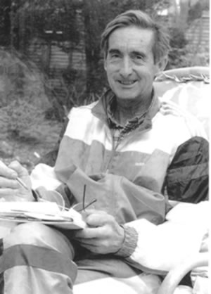

В отличие от типичного малоподвижного представителя цивилизованного мира, высокоактивный, подверженный стрессу и большим нагрузкам организм бегуна, нуждается в дополнительном снабжении всеми важными витаминами, минералами и питательными веществами. Большинство спортсменов не уделяют должного внимания тому, что они едят, и некоторое время это не сказывается на их результатах. Но очень трудно поддерживать высокий уровень формы в течение продолжительного времени и не заботиться о том, что вы употребляете в пищу. В «высокоразвитых» странах, таких как Британия и США людей кормят монополизировавщие рынок гигантские корпорации, это привело к тому, что пища лишилась основных полезных веществ до такой степени, что все они заменены различными искусственными добавками. Многие из этих добавок образуют такие сочетания, которые разрушают витамины и минералы, уже находящиеся в организме. Если вы среднестатистический человек, и едите как все, то почти наверняка страдаете от неправильного питания, но скорее всего так не считаете, потому что вам хорошо промыли мозги рекламой.
Если вы едите натуральные продукты – фрукты, овощи, злаки – то единственный способ сохранить в них все полезные вещества, это наклониться и собирать их прямо с грядки, либо рвать с дерева или кустарника, на котором они выросли. Каждый день и час, который проходит после того, как натуральная пища покидает родную почву, уменьшает её питательную ценность. Чем более свежей будет ваша пища, тем лучше. При длительном хранении (месяцы или годы, если она была заморожена), почти все полезные компоненты в ней будут разрушены. Если вы едите эти продукты, то не получаете от них практически никакой пользы.
Никогда не ешьте продукты из пшеничной муки, сахара и не пейте молоко, которое было гомогенизировано. Ученые могут подтвердить это, если только они не получают зарплату в одной из крупных пищевых компаний. Не верьте «научным фактам» о питательной ценности продуктов, которые обычно указаны на упаковке.
В течение 50 лет я общался со многими выдающимися спортсменами, и пришел к выводу, что великолепных результатов можно достичь, не придавая большого значения правильному питанию, но оставаться длительное время на пике формы без этого невозможно. Все успешные спортсмены отличаются тем, что очень внимательно относятся к выбору продуктов и употреблению витаминов. Многие из них вегетарианцы. Если вы встретите этих людей, через много лет, (при условии, что с ними не случится какой-нибудь несчастный случай), то убедитесь, что они очень активны, здоровы, находятся в отличной форме, в особенности по сравнению с теми, кто употреблял в пищу обычные промышленно переработанные продукты.
Другой важный фактор – количество принимаемой пищи. Кроме этого, большое значение имеет не только то, что вы употребляете в пищу, но и как вы это едите.
Пищу нужно принимать в приятной, расслабленной, лишенной напряжения атмосфере. Ешьте не спеша, тщательно пережевывая. Человек, который в спешке заглатывает еду (например, разговаривает, работает, или смотрит телевизор), поступает неправильно.
Итак, если вы принадлежите к нашим прекрасным «высокоразвитым» нациям, то для компенсирования недостатка в полноценном питании вы должны употреблять витамины. Если же вы активно соревнующийся спортсмен, то вам требуется ещё большее количество добавок к пище, чем среднестатистическому человеку – а ему требуется немало! Всё больше новых фактов мы узнаем о пользе витаминов для нашего организма. Интенсивно тренирующийся спортсмен нуждается в большом количестве витаминов и минералов, и тут необходима помощь опытного врача, который сможет дать совет как улучшить качество функционирования организма.
Очень легко ошибиться с правильным выбором дозировки витаминов. Слишком большое количество витаминов, в некоторых случаях может быть также вредно, как и слишком малое. Работа врача заключается в том, чтобы оценить ваши индивидуальные потребности и дать соответствующие рекомендации. По мере того, как растет уровень тренированности организма, его потребности будут меняться, поэтому важно периодически консультироваться с врачом на предмет внесения соответствующих изменений в ваш рацион.
Ещё раз повторюсь, что потребности атлета, занимающегося высокоинтенсивным, энергоемким видом спорта, сильно превышают потребности среднестатистического человека. Разные индивидуумы – в особенности женщины – имеют различные потребности. Здесь как раз потребуется совет компетентного специалиста и необходимое наблюдение. Для нетренированного человека практически невозможно объективно оценить потребности организма. Для того, чтобы избежать серьёзных ошибок в рационе питания и выборе витаминов, необходимо проконсультироваться с опытным терапевтом! Это очень важно.
Атлеты должны уделять внимание трём основным факторам, которые определяют их спортивную форму: (1) тренировочная работа, (2) питание – что, как и когда есть и пить, (3) отдых (включая сон) – который получает организм атлета. Если вы не уделяете постоянного пристального внимания этим трём составляющим, то не сможете прогрессировать как спортсмен.
Можно двум разным людям давать совершенно одинаковую пищу, и они будут совсем по-разному воспринимать её. Отчасти это происходит из-за того, что характер приёма пищи влияет на то, как она будет усваиваться. Процесс пищеварения начинается с пережевывания, и если вы глотаете пищу не пережевывая, она не будет усваиваться полностью. Слюна является важнейшей компонентой полноценного пищеварения. Если пища не оставалась во рту достаточное время, то процесс пищеварения не будет завершен правильно и вы не получите всех содержащихся в ней питательных веществ.
Не пейте во время приёма пищи. Напитки, принимаемые с едой, влияют на процесс пищеварения и снижают питательную ценность пищи. Общее правило, которого следует придерживаться относительно приёма жидкости – не пить ничего менее чем за 10 минут до приёма пищи и в течение часа после еды. Это даст вашей пищеварительной системе возможность работать наиболее эффективно и принесет максимальную пользу от полученного питания. Для спортсменов это требование оказывается наиболее трудновыполнимым, так как противоречит правилам приёма жидкости, принятым в «цивилизованном» мире – все хотят насладиться небольшим количеством вина или пива во время еды – но вы должны стараться избегать приёма жидкости во время еды, в особенности чая и кофе.
Одно из труднейших препятствий, которое приходится преодолевать многим будущим атлетам – избыточный вес. Он не дает бежать быстро. Он сокращает жизнь. Еда доставляет нам удовольствие, но у каждого есть выбор: либо недолго прожить без ограничений и в бешеном ритме, либо быть сдержанным, внимательно относиться к своему телу и наслаждаться жизнью длительное время. Польза (или вред) от приёма витаминов, так же как и пищи, зависит от времени и порядка их приёма. Определённые сочетания витаминов оказывают очень хорошее влияние, а другие, напротив, разрушают друг друга. Например, витамин Е разрушается при приёме с железом. Вы должны следить за тем, чтобы принимать их в разное время дня, для того, чтобы получить максимальную пользу от обоих компонентов.
Количество и частота приёма витаминов подчиняется тем же правилам, что и тренировочный процесс в целом. Лучше принимать витамины несколько раз в день (вместе с едой), а не съедать ежедневную дозу за один раз. Организм постоянно работает над расщеплением и усвоением пищи, которая в него поступает. Соответственно, частый приём витаминов, поможет организму наиболее полно усваивать полезные вещества. Это особенно важно для водорастворимых витаминов – так как они очень быстро усваиваются и выводятся из организма.
Количество витаминов, которое необходимо (и безопасно) для организма, остается предметом серьёзных споров, но как следует из доступных информационных источников, и как подсказывает мой собственный опыт, приём больших доз является наиболее эффективным средством восстановления и поддержания работоспособности организма, не получающего достаточного количества витаминов с пищей. Ежедневные суточные дозы приёма витаминов (RDA), определённые Американской Администрацией Здравоохранения и Лекарственных препаратов (FDA) по-видимому, являются недостаточными для активно тренирующегося спортсмена. Во многих случаях это количество может быть увеличено в несколько раз. Для определения вашей суточной потребности в витаминах, необходимо проконсультироваться с врачом, который понимает особенности вашего вида спорта. Очень важно найти хорошего специалиста, но как показывает опыт, большинство терапевтов в США и Британии мало разбираются в вопросах питания и биохимии и ещё менее знают о потребностях напряжённо тренирующегося, подверженного стрессам атлета. Будьте очень внимательны при выборе врача, которому вы сможете доверить свое здоровье и беговую карьеру.
Я часто привожу в пример два дня моей тренировки, чтобы проиллюстрировать насколько эффективно может поддерживаться и улучшаться работоспособность организма, если принимаемая пища правильно скомбинирована с витаминами:
Первый день
Проехал на велосипеде 230 км. Выехал в 8 утра, закончил в 6 вечера. Первые 30 км проехал за 1 час, потом съел небольшой перекус с витаминами и минеральными добавками. Так я повторял 8 раз в течение поездки и вернулся к финишу свежим и готовым к 6-мильной пробежке.
Второй день
Проехал на велосипеде 30 км, затем съел небольшой перекус с витаминами и добавками и бегал в течение 2-х с четвертью часов, съел небольшой перекус и бегал ещё три с половиной часа, съел перекус с добавками и проехал 30 км на велосипеде обратно к дому.
В течение двух дней, последовавших за этими чрезвычайно напряжёнными тренировками, я продолжал бегать от двух до трёх часов каждый день не испытывая дискомфорта или утомления. Несмотря на огромные нагрузки, которым я подвергал себя в эти дни, я не испытывал потребности в восстановлении. Для того чтобы подвергать себя таким нагрузкам нужно быть либо сумасшедшим, либо очень внимательно относиться к своему питанию - если не уделять этому должного внимания, то организм не выдержит. Перекусы, которые я ел, состояли из таблетки железа (100 мг), одного грамма витамина С, четырех конфет, полпинты молока, ломтика черного хлеба и двух унций сыра. Эти перекусы я ел каждый час в течение первого дня, и в перерыве между упражнениями во второй день. Воду я пил, когда начинал чувствовать жажду в процессе выполнения упражнений. Я могу привести и другие примеры, когда без труда мог продолжать выполнение интенсивных тренировок при правильном питании. Я не испытывал никаких отрицательных эффектов от этой очень тяжёлой работы. И сегодня я с лёгкостью могу выполнять многочасовую напряжённую работу, если правильно организую свое питание.
Ошибки, совершаемые спортсменами
Питание – не единственная область, в которой спортсмены могут совершать ошибки. Напряжённая тренировка требует внимательного отношения ко всем аспектам жизни. Для того чтобы избежать серьёзных проблем, спортсмен должен каждый день пристально наблюдать за состоянием своего организма.
Самые серьёзные ошибки могут привести к смерти спортсмена. Хотя это и очевидно, но подобные случаи не настолько редки, как может показаться. Если спортсмен из-за неправильного питания или болезни плохо себя чувствует, то он должен принять меры для лечения. Помимо очевидного требования не бегать в это время, существуют и другие правила, которым необходимо следовать. Нужно проверять свой пульс каждое утро, перед тем как встать с кровати. Если пульс превышает норму на 10 процентов, то не тренируйтесь в этот день, и в течение двух дней после того, как пульс вернется в норму. Высокий пульс – это сигнал вашего тела о том, что не всё в порядке (как правило, это признак повышенной температуры и других симптомов гриппа). Прислушивайтесь к своему телу.
Пример человека, не следовавшего этим рекомендациям – Майк Уэллс-Коул, Британский чемпион по ориентированию. Как-то в воскресенье, несмотря на высокий пульс, вызванный простудой, он пошел на тренировку и бегал в течение двух часов. Он умер в 5 часов вечера того же дня. Я советовал ему не бегать, но, к сожалению, он не прислушался и заплатил жизнью. Другой пример неразумного подхода к занятиям спортом мне встретился на Королевском Военно-морском флоте. Недавно мне довелось побывать на борту одноо из короблей в Окленде, и я предложил устроить день бега с моряками. Спортивный инструктор судна сказал мне, что бегунов на борту нет. Как-то раз командование уже проводило тестирование уровеня физической подготовки личного состава. Участникам было предложено пробежать максимально возможную дистанцию за определённое время. Во время забега несколько моряков свалилось замертво, и тест был прерван.
Из этого следовал очевидный вывод о том, что спортивная форма моряков находится в ужасающем состоянии и они не готовы вести боевые действия. Но избранный способ проведения тестирования был явно неподходящим и более того, глупым. При правильном построении спортивной работы необходимо было всему личному составу (включая офицеров, чья физическая форма находится в наиболее плачевном состоянии) предложить курс начальной физической подготовки, прежде чем проводить какое-либо тестирование. Вместо этого командование провело бездумное тестирование, и после смерти моряков просто запретило любые беговые упражнения, повторив классическую ситуацию «Уловка 22» (Сатирический антивоенный роман Джозефа Хеллера – прим. пер.).
Ещё один пример – Алан Браун, интеллигентный банковский менеджер из Новой Зеландии, который пытался победить меня на соревнованиях по ориентированию. Он начал забег сразу же после «цивилизованного» завтрака, и через 200 метров после старта почувствовал себя плохо, начал задыхаться и умер. И в этом случае он не послушал моего совета. Бегать можно не ранее чем через два часа после приёма пищи.
Ошибки, связанные с питанием
АНОРЕКСИЯ – В спортивных командах американских колледжей принято строго контролировать вес спортсменок без внесения продуманных изменений в режим питания. Единственный критерий – весы. В результате, чтобы пройти очередное взвешивание, некоторые девушки просто перестают есть. Это приводит к ослаблению здоровья, тошноте и даже хрупкости костей. Вместо этого спортсменки должны стремиться к тому, чтобы стать более быстрыми, сильными и здоровыми за счёт насыщенной тренировки и полноценного питания с включением необходимых добавок.
СПОРТИВНАЯ АНЕМИЯ – Другая распространённая проблема, часто вызванная неправильным питанием у активно тренирующихся спортсменов. Без правильно построенного питания организм не будет получать железо в количествах, достаточных для проведения тяжёлых ежедневных тренировок. Даже если пища содержит достаточное количество железа, при неправильном питании организм не сможет его усвоить и уровень гемоглобина спортсмена будет пониженным.
Витамин B12 и фолиевая кислота также очень важны для состава крови.
Регулярно делайте анализ крови и проверяйте уровень гемоглобина. Если необходимо, под руководством врача принимайте препараты железа, и скорректируйте питание. Если у вас анемия, то не пытайтесь найти волшебное лекарство. Повышение уровня гемоглобина может занять до шести месяцев. Может оказаться необходимым сделать перерыв в занятиях на это время. Потом возобновите тренировки уже здоровым человеком. Если вы будете заставлять себя продолжать интенсивные тренировки, то вероятнее всего только усугубите ситуацию.
Повторюсь ещё раз, что проблемы здоровья нужно решать вместе с опытным спортивным врачом. Врач не знакомый со спортивной спецификой скажет вам, что уровень гемоглобина 12г/дл является нормальным. Но если вы занимаетесь спортом, то уровень гемоглобина должен быть по крайней мере 14 г/дл! Когда Кип Кейно и Джим Райан были в своей лучшей форме, то имели уровень гемоглобина 19 г/дл.
Тренировка в среднегорье благотворно влияет на повышение уровня гемоглобина, так как недостаток кислорода стимулирует выделение гормона эритропоэтина, который в свою очередь заставляет костный мозг производить больше красных кровяных телец. Во время тренировки в высокогорье спортсмен нуждается в ещё более обогащенном рационе, так как эта тренировка предъявляет более высокие требования к организму. Американец Бил Макчесни говорил мне, что не может регулярно бегать на высоте, и для поддержания работоспособности ему приходится заменять беговые тренировки плаванием и велосипедом. Если бы во время тренировок на высоте он адекватно улучшил свое питание, то обнаружил бы, что способен тренироваться очень эффективно и, вероятно, даже вернул бы себе статус национального чемпиона и рекордсмена.
И, наконец, избегайте антибиотиков. Когда вы их употребляете, то разрушаете многие полезные свойства, накопленные в результате длительных тренировок и правильного режима питания. Антибиотики – это последнее средство, применяемое, когда стоит вопрос о жизни или смерти. Если вы их принимаете, то потом давайте организму отдых. Не тренируйтесь в течение недели. Анне Одейн три раза совершала очень опасную ошибку, когда пыталась бегать после приёма антибиотиков. Она не говорила мне, что принимала инъекции антибиотиков – если бы я знал, то запретил бы бегать в течение нескольких дней. Во вторник, после приёма лекарств, она напряжено тренировалась на стадионе Отахуху и впала в состояние коллапса, это с ней повторилось через четыре дня во время крупного чемпионата. После этого она болела в течение двух недель.
То же касается и операций. Нож должен быть использован только в самом крайнем случае. Хирургия – последнее прибежище людей, привязанных к постели. Если возможно – избегайте операций.
Ниже я привожу список литературы, в которой вы можете найти полезную информацию. В некоторых вопросах эти книги противоречат друг другу, но они содержат основополагающие сведения о правильном питании и витаминных препаратах, которые вам помогут улучшить здоровье и поднять спортивные результаты на более высокий уровень.